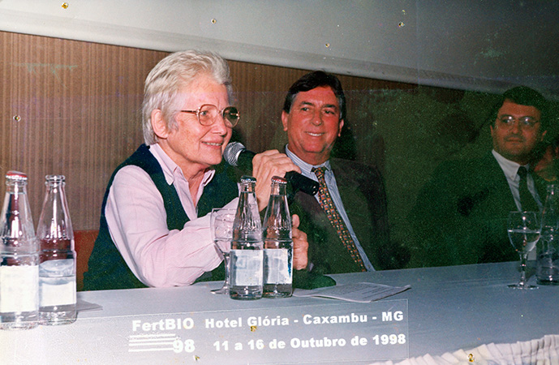
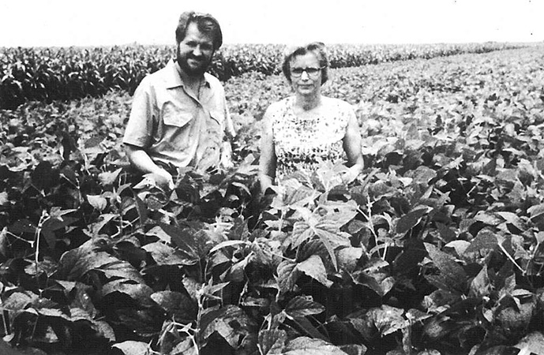
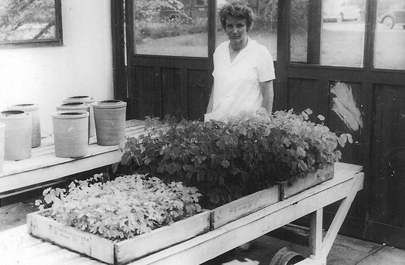

Uma mulher à frente de seu tempo




Cientista, mulher e mãe, Johanna Döbereiner liderou grupos de pesquisa no então Instituto de Ecologia e Experimentação Agrícola do
Serviço Nacional de Pesquisas Agronômicas – o precursor da Embrapa Agrobiologia.
Em um século em que a agricultura somava desafios e tinha a presença masculina como regra, ela foi a exceção. Seus esforços transformaram o Brasil no segundo maior produtor mundial de soja, atrás apenas dos Estados Unidos, e de maneira ecologicamente correta e sustentável
Johanna foi matéria das principais revistas nacionais e ainda hoje é lembrada quando o assunto é ciência.
Em um século em que a agricultura somava desafios e tinha a presença masculina como regra, ela foi a exceção. Seus esforços transformaram o Brasil no segundo maior produtor mundial de soja, atrás apenas dos Estados Unidos, e de maneira ecologicamente correta e sustentável
Johanna foi matéria das principais revistas nacionais e ainda hoje é lembrada quando o assunto é ciência.
"A agrônoma Johanna Döbereiner é a sétima cientista brasileira mais citada pela comunidade científica mundial e a primeira entre as mulheres, segundo levantamento de 1995
da Folha de S. Paulo."
A senhora das criaturas milagrosas
Na década de 60, Johanna propôs uma inovação disruptiva: substituir os adubos nitrogenados por microrganismos
fixadores de nitrogênio, que converteriam nitrogênio atmosférico em nitrogênio disponível para as plantas.
As pesquisas de Johanna, neste sentido, tiveram grande sucesso. A aplicação prática desta técnica permitiu que o Brasil eliminasse o uso desses adubos químicos décadas mais tarde. Essa inovação tem representado uma economia anual de mais de 2 bilhões de dólares, além de maior sustentabilidade, por não gerar passivos ambientais.
Em entrevista à revista Veja em 1996, Johanna relembrou "Na década de 60, ir contra a adubação química era quase um sacrilégio... Mas, nossas pesquisas não só permitiam uma produção mais barata como também mais ecológica, porque não poluía os rios nem o solo".
As pesquisas de Johanna, neste sentido, tiveram grande sucesso. A aplicação prática desta técnica permitiu que o Brasil eliminasse o uso desses adubos químicos décadas mais tarde. Essa inovação tem representado uma economia anual de mais de 2 bilhões de dólares, além de maior sustentabilidade, por não gerar passivos ambientais.
Em entrevista à revista Veja em 1996, Johanna relembrou "Na década de 60, ir contra a adubação química era quase um sacrilégio... Mas, nossas pesquisas não só permitiam uma produção mais barata como também mais ecológica, porque não poluía os rios nem o solo".

"Seu trabalho com fixação biológica do nitrogênio permitiu que milhares de pessoas consumissem alimentos
mais baratos e saudáveis, o que lhe valeu a indicação ao Prêmio Nobel em 1997."
A história de vida de Johanna
Johanna nasceu 1924 em Aussig, Checoslováquia. Durante a Segunda Guerra Mundial perdeu sua mãe em
um campo de concentração. Seu sofrimento foi amplicado após o término da guerra, devido a perseguição que
as minorias que falavam alemão passaram a sofrer. Anos mais tarde, ela se muda com os
avós para a Alemanha Oriental em busca de um novo recomeço e paz.
Aos 23 anos, Johanna inicia o curso de Agronomia na Universidade de Munique, onde além do diploma, conquistou o estudante de medicina veterinária, Jürgen Döbereiner, que se tornou seu marido e com quem venho para o Brasil se encontrar com o pai que havia emigrado antes. Johana viveu, até seus últimos dias de vida, ao lado do seu amor.
Aos 75 anos, a grande cientista morreu de problemas neurológicos, em Seropédica (RJ), mas continua sendo a grande estrela do agronegócio brasileiro, e conhecida como a mulher que revolucionou a agricultura
Aos 23 anos, Johanna inicia o curso de Agronomia na Universidade de Munique, onde além do diploma, conquistou o estudante de medicina veterinária, Jürgen Döbereiner, que se tornou seu marido e com quem venho para o Brasil se encontrar com o pai que havia emigrado antes. Johana viveu, até seus últimos dias de vida, ao lado do seu amor.
Aos 75 anos, a grande cientista morreu de problemas neurológicos, em Seropédica (RJ), mas continua sendo a grande estrela do agronegócio brasileiro, e conhecida como a mulher que revolucionou a agricultura
Se interessou em saber mais sobre essa maravilhosa?
Cadastre seu e-mail para receber um E-book completo sobre a vida, profissão e publicações de Johanna Döbereiner